Im Menüpunkt
1 Auswertungen
1 Elektronische Bilanz
1 Ausgabe
können die E-Bilanz bzw. der ERV-JAb erzeugt werden.
Ein Assistent führt durch die einzelnen Schritte.
1. Schritt - Auswahl
Im ersten Schritt kann die gewünschte eBKZ-Gruppe und (falls in den Stammdaten noch nicht eindeutig festgelegt) die gewünschte Auswertung ausgewählt werden.
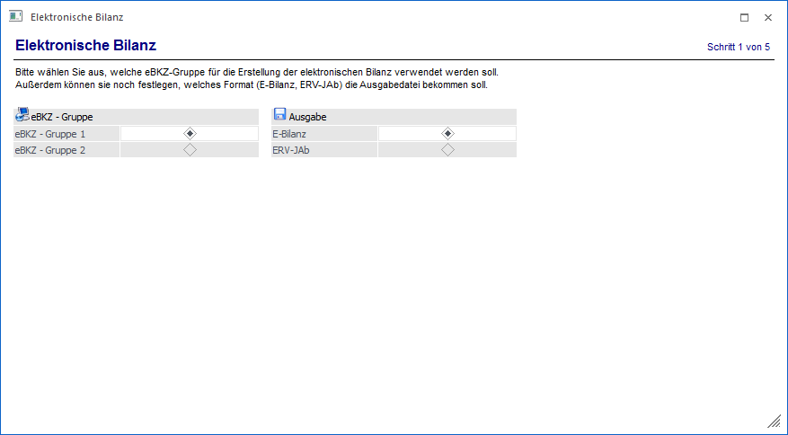
2. Schritt - Allgemeine Daten
In diesem Schritt müssen die allgemeinen Angaben bekannt gegeben werden.
Eingaben für E-Bilanz:
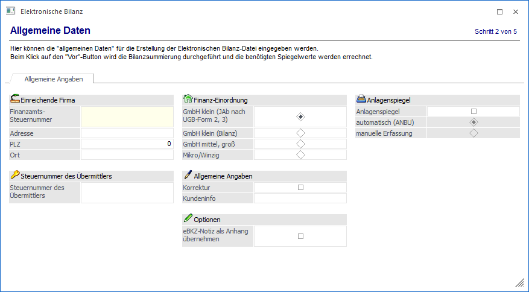
Eingaben für ERV-JAb:
Die Eingaben für den ERV-JAb sind auf zwei Register aufgeteilt.
Im Register "Allgemeine Angaben" erfolgt die Eingabe zu den allgemeinen Daten betreffend der einreichenden Firma.
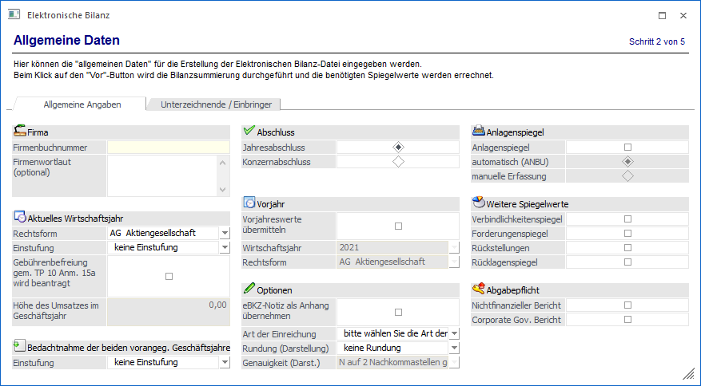
Im Register Unterzeichnender/Einbringer können beliebig viele Unterzeichnende bzw. Einbringende hinterlegt werden.
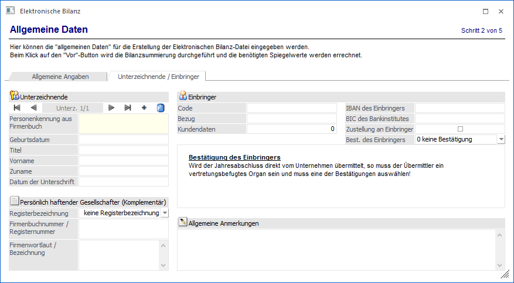
Ø Code
Reicht das Unternehmen direkt ein, muss in diesem Feld die Firmenbuchnummer eingetragen werden.
3. Schritt - Vorschau
Zwischen Schritt 2 und Schritt 3 werden die Werte errechnet.
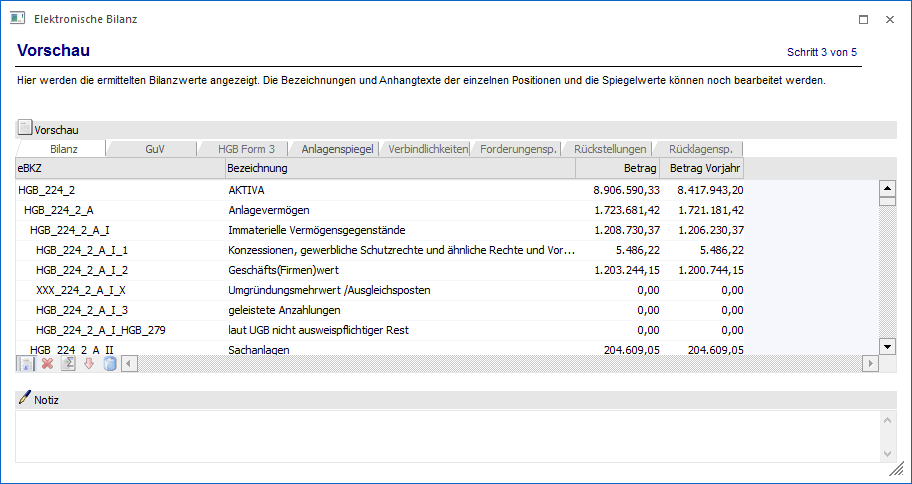
In diesem Schritt werden die ermittelten Werte in einer Tabelle dargestellt, deren einzelne Positionsbezeichnungen gegebenenfalls noch editiert werden können. Wird eine Bezeichnung in diesem Schritt editiert, so wird diese beim Erzeugen der Datei berücksichtigt aber nicht in die eBKZ Struktur (Stammdaten) übernommen.
Wurde in den Stammdaten bei einer eBKZ die Option "manuelle Eingabe" gesetzt, so wird in der entsprechenden Zeile der Vorschau in der Spalte "man." das Symbol angezeigt. Damit wird signalisiert, dass diese Zeile auch von den Werten her manuell verändert werden kann. So vorgenommene Änderungen werden auch sofort zwischengespeichert, gerechnet wird mit den manuell eingegeben Werten nicht.
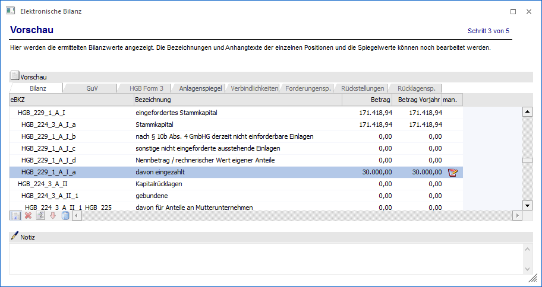
Ø
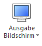
Die Bilanz kann wahlweise auf dem
Drucker oder am Bildschirm ausgegeben werden.
Mittels Vorschau Bildschirm
Button kann die Vorschau auch als PDB ausgegeben werden.
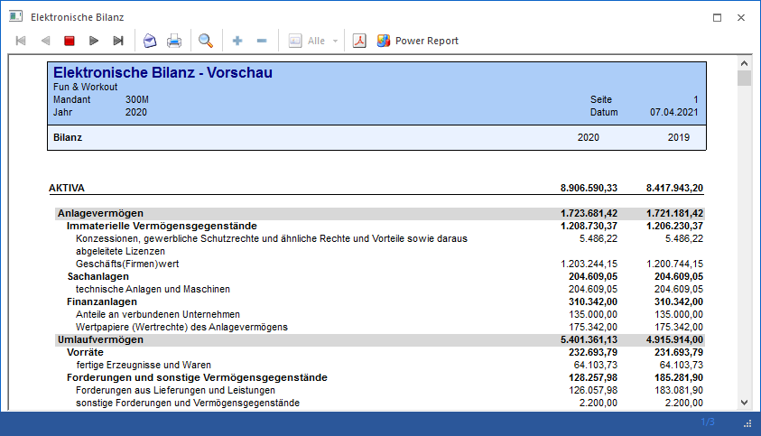
Tabellenbuttons
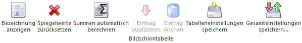
Ø Bezeichnung anzeigen
Ist dieser Button aktiviert (orange hinterlegt), dann werden auch die Bezeichnungen der einzelnen Positionen angezeigt.
Ø Spiegelwerte zurücksetzen
Durch Anklicken dieses Buttons werden die Spiegelwerte initialisiert.
Ø Summen automatisch berechnen
Werden die Spiegelwerte editiert, so können die Summen der übergeordneten eBKZs automatisch neu errechnet werden.
Ø Eintrag duplizieren
Mittels "Eintrag duplizieren" können im HGB Form 3 Einträge eingefügt werden.
Ø Eintrag löschen
Die manuell eingefügten Positionen im HGB Form 3 können mit diesem Button wieder gelöscht werden.
4. Schritt - Vermerke
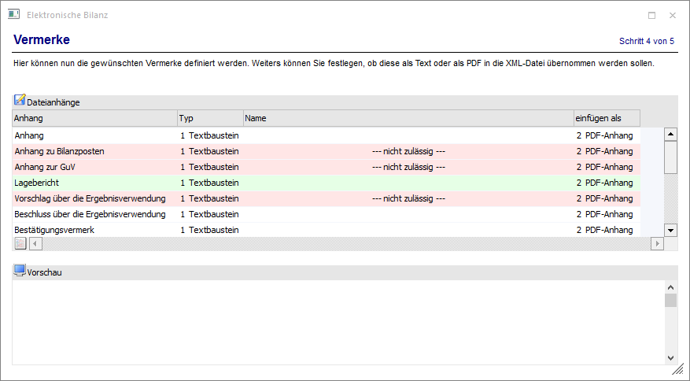
In diesem Schritt können nun die gewünschten Dateianhänge ("Vermerke") definiert werden. Diese können Textbausteine, Textdateien oder (Adobe-) PDF-Dateien sein, die dann wahlweise als Text- oder base64- codierten PDF-Anhang in die Datei übernommen werden.
Handelt es sich um eine Text Datei oder einen Textbaustein, so wird unter Vorschau dieser Text angezeigt. Anhänge im PDF-Format können mittels "PDF Vorschau öffnen" Button im Acrobat Reader zur Vorschau geöffnet werden.
5. Schritt - Ausgabe
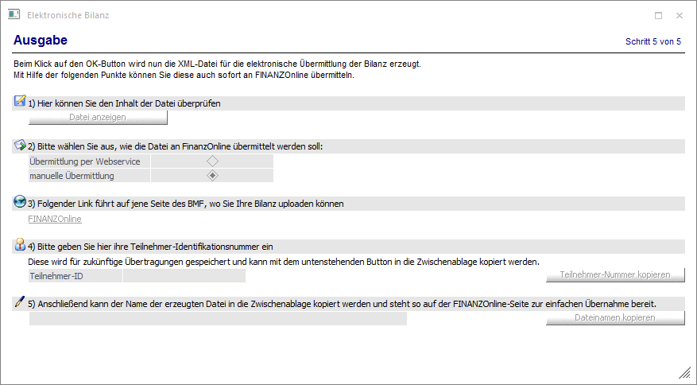
In diesem Schritt wird nach drücken des OK Buttons die XML-Datei erzeugt. Die Datei wird im Unterverzeichnis "FINANZOnline" im WinLine Programmverzeichnis erzeugt und kann sofort übermittelt werden.
Buttons
Ø OK
Mittels "OK" Button oder F5-Taste wird die Datei erzeugt
Ø Ende
Durch Drücken des Ende Button oder der ESC Taste wird das Fenster geschlossen.
Ø Vor / Zurück
Mittels des Vor- oder Zurück-Buttons gelangt man in den nächsten oder vorherigen Schritt des Assistenten.